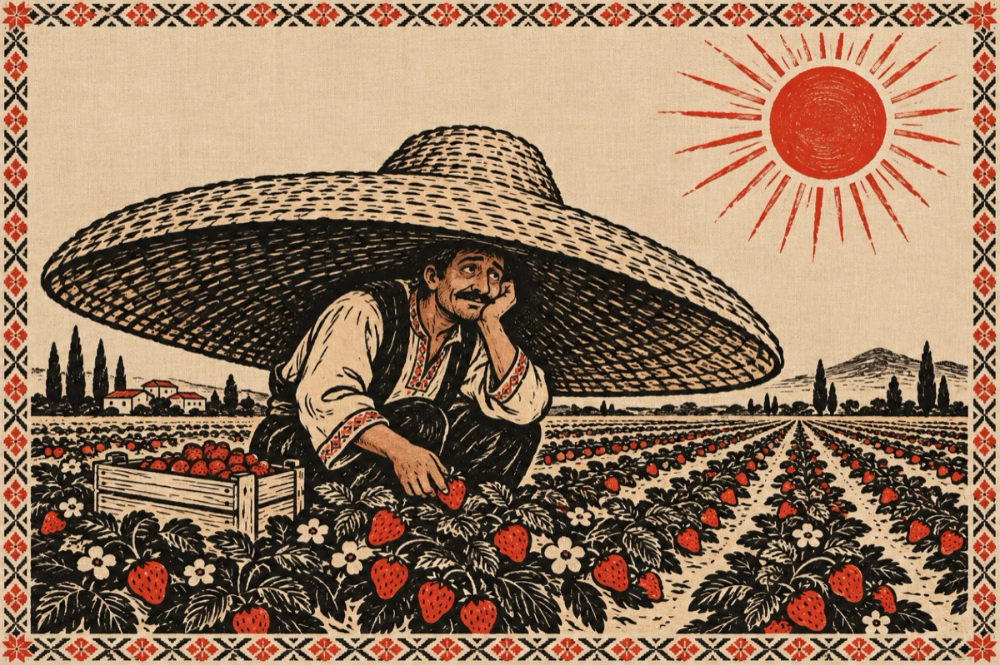

Văsălie s-o fo’ dus
Văsălie s-o fo’ dus
Până-acia-n Spania
Nici acasă n-o fo’ spus
Nicări pățania.
S-omburdat precum berbecul
Cum sâ zâce pă la noi
Că-l v-a ostoi succesul
Crezând că oameni-s oi!
Șâ s-o țopat în căpșuni
Uitând pân’ șâ de Maria
Spaniolii oameni buni
Ior zâs; pune-ți pălăria.
Că acia-i zăpușeală
Fierbe creierul în cap
Cum fierbe curechiu-n oală
Iar mintea ți-o ia la trap!
Pălăria-n beceșug
Nu-i cum clopu de la noi,
Cum ar fi păcală-n târg
Ori măgarul între oi!
Șâ a stat el cât a stat
Ascuns pe sub pălărie
Da-ntr-o zâ lo apucat
Un dor mare de Mărie.
Doamane ziceai că-i pălit
De oricare boală grea
Ori ceva că i-a venit,
Că Măria nu-l mai vrea!
Ș-atunci s-a îmburcat
Într-un avion beceag
Nu-ma nu s-a răsturnat
Pân-o ajuns pe-al său meleag.
Măria îl aștepta
Cu foalele pân’ la gură
Sâ din glas așa-i zâcea;
„Bun venit în bătătură”!
Io acasă te-am lăsat
Mândră cum o balerină.
Cu cine te-ai adunat,
De nu-ncapi nici în masână?
Să îmi zâci acum dirept
De-ai pățât cu-altcineva
Și de-o fi precum m-aștept
Eu mă-ntorc în Spania.
Trăjnite-ar, tu ești bolând
Ai zăuitat ce-ai făcut,
De iubire fiind flămând
Atunci când m-oi părăsât.
Și-ai plecat fără să-mi spui
Taman până-n Spania
S-aduni la ăia căpșuni
Ș-acum zâci de ce îs grea?
Dap-i draga mea Mărie
Io am cules la căpșuni
Cu clop nu cu pălărie
Poți să mă treci la nebuni!
Iartă-mă, ș-acum mă lasă
Să te pup pe obrăjor
C-am adus să facem casă
Bani, păntru-a nost’ fecior!
Vasile Groza